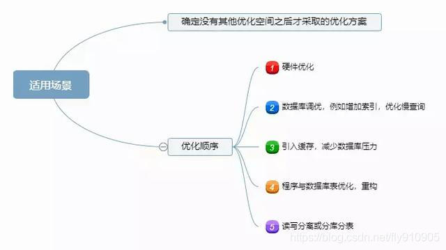
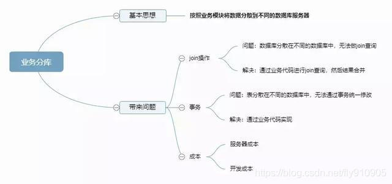
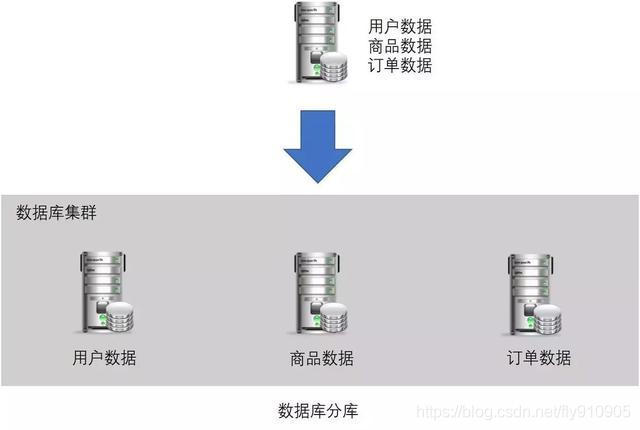
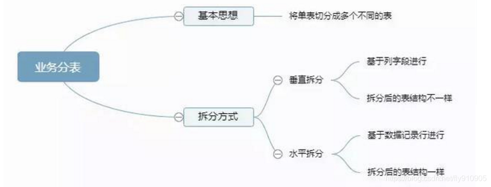
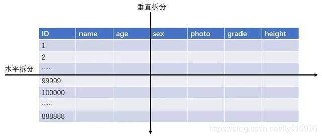
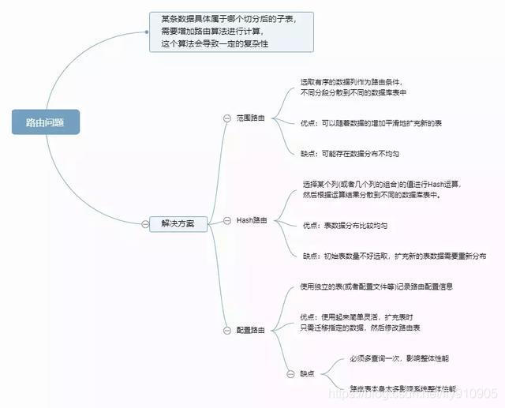
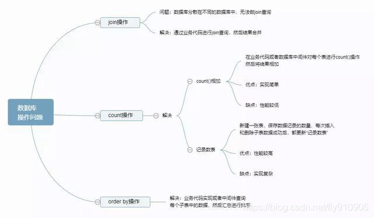

为什么要分库分表
移动互联网时代，海量的用户每天产生海量的数量，比如：用户表、订单表、交易流水表。
以支付宝用户为例，8亿；微信用户更是10亿。订单表更夸张，比如美团外卖，每天都是几千万的订单。淘宝的历史订单总量应该百亿，甚至千亿级别，这些海量数据远不是一张表能Hold住的。
事实上MySQL单表可以存储10亿级数据，只是这时候性能比较差，业界公认MySQL单表容量在1KW以下是最佳状态，因为这时它的BTREE索引树高在3~5之间。
既然一张表无法搞定，那么就想办法将数据放到多个地方，目前比较普遍的方案有3个：
- 分区；
- 分库分表；
- NoSQL/NewSQL；NoSQL比较具有代表性的是MongoDB，es。NewSQL比较具有代表性的是TiDB。
数据库架构演变：从读写分离到分库分表
刚开始我们只用单机数据库就够了，随后面对越来越多的请求，我们将数据库的写操作和读操作进行分离， 使用多个从库副本（Slaver Replication）负责读，使用主库（Master）负责写， 从库从主库同步更新数据，保持数据一致。架构上就是数据库主从同步。 从库可以水平扩展，所以更多的读请求不成问题。
但是当用户量级上来后，写请求越来越多，该怎么办？加一个Master是不能解决问题的， 因为数据要保存一致性，写操作需要2个master之间同步，相当于是重复了，而且更加复杂。
这时就需要用到分库分表（sharding），对写操作进行切分。
为什么不NoSQL/NewSQL?
首先，为什么不选择第三种方案NoSQL/NewSQL，我认为主要是RDBMS有以下几个优点：
RDBMS：关系型数据库管理系统（Relational Database Management System）
- RDBMS生态完善；
- RDBMS绝对稳定；
- RDBMS的事务特性；
NoSQL/NewSQL作为新生儿，在我们把可靠性当做首要考察对象时，它是无法与RDBMS相提并论的。RDBMS发展几十年，只要有软件的地方，它都是核心存储的首选。
目前绝大部分公司的核心数据都是：以RDBMS存储为主，NoSQL/NewSQL存储为辅！互联网公司又以MySQL为主，国企&银行等不差钱的企业以Oracle/DB2为主！NoSQL/NewSQL宣传的无论多牛逼，就现在各大公司对它的定位，都是RDBMS的补充，而不是取而代之！
为什么不分区?
我们再看分区表方案。了解这个方案之前，先了解它的原理：
分区：就是把一张表的数据分成N个区块，在逻辑上看最终只是一张表，但底层是由N个物理区块组成的，分区实现比较简单，数据库mysql、oracle等很容易就可支持。
分区表是由多个相关的底层表实现，这些底层表也是由句柄对象表示，所以我们也可以直接访问各个分区，存储引擎管理分区的各个底层表和管理普通表一样（所有的底层表都必须使用相同的存储引擎），分区表的索引只是在各个底层表上各自加上一个相同的索引，从存储引擎的角度来看，底层表和一个普通表没有任何不同，存储引擎也无须知道这是一个普通表还是一个分区表的一部分。
一旦分表，一个库中的表会越来越多
将整个数据库比作图书馆，一张表就是一本书。当要在一本书中查找某项内容时，如果不分章节，查找的效率将会下降。而同理，在数据库中就是分区。
- 什么时候考虑使用分区：一张表的查询速度已经慢到影响使用的时候。
- sql经过优化
- 数据量大
- 表中的数据是分段的
- 对数据的操作往往只涉及一部分数据，而不是所有的数据
分区解决的问题：主要可以提升查询效率
分区的实现方式（简单）：
mysql5 开始支持分区功能
CREATE TABLE sales (
id INT AUTO_INCREMENT,
amount DOUBLE NOT NULL,
order_day DATETIME NOT NULL,
PRIMARY KEY(id, order_day)
) ENGINE=Innodb
PARTITION BY RANGE(YEAR(order_day)) (
PARTITION p_2010 VALUES LESS THAN (2010),
PARTITION p_2011 VALUES LESS THAN (2011),
PARTITION p_2012 VALUES LESS THAN (2012),
PARTITION p_catchall VALUES LESS THAN MAXVALUE);
- 事实上，这个方案也不错，它对用户屏蔽了sharding的细节，即使查询条件没有sharding column，它也能正常工作（只是这时候性能一般）。
- 不过它的缺点很明显：很多的资源都受到单机的限制，例如连接数，网络吞吐等！虽然每个分区可以独立存储，但是分区表的总入口还是一个MySQL示例。从而导致它的并发能力非常一般，远远达不到互联网高并发的要求！
- 至于网上提到的一些其他缺点比如：无法使用外键，不支持全文索引。我认为这都不算缺点，21世纪的项目如果还是使用外键和数据库的全文索引，我都懒得吐槽了！
所以，如果使用分区表，你的业应该具备如下两个特点：
数据不是海量（分区数有限，存储能力就有限）；
并发能力要求不高；
分库分表概述
读写分离：分散数据库读写操作压力
分库分表：分散存储压力
适用场景

- 类似读写分离，分库分表也是确定没有其他优化空间之后才采取的优化方案。
- 那如果业务真的发展很快岂不是很快要进行分库分表了？那为何不一开始就设计好呢？
按照架构设计的“三原则”（简单原则，合适原则，演化原则），简单分析一下：
首先，这里的“如果”事实上发生的概率比较低，做10个业务有一个业务能活下去就很不错了，更何况快速发展，和中彩票的概率差不多。如果我们每个业务上来就按照淘宝、微信的规模去做架构设计，不但会累死自己，还会害死业务。
其次，如果业务真的发展很快，后面进行分库分表也不迟。因为业务发展好，相应的资源投入就会加大，可以投入更多的人和更多的钱，那业务分库带来的代码和业务复杂问题就可以通过加人来解决，成本问题也可以通过增加资金来解决。
分库分表的方式方法
一般就是垂直切分和水平切分，这是一种结果集描述的切分方式，是物理空间上的切分。
我们从面临的问题，开始解决，阐述： 首先是用户请求量太大，我们就堆机器搞定（这不是本文重点）。
然后是单个库太大，这时我们要看是因为表多而导致数据多，还是因为单张表里面的数据多。
如果是因为表多而数据多，使用垂直切分，根据业务切分成不同的库。
如果是因为单张表的数据量太大，这时要用水平切分，即把表的数据按某种规则切分成多张表，甚至多个库上的多张表。
分库分表的顺序应该是先垂直分，后水平分。 因为垂直分更简单，更符合我们处理现实世界问题的方式。
垂直拆分
垂直分表
也就是“大表拆小表”，基于列字段进行的。
一般是表中的字段较多，将不常用的， 数据较大，长度较长（比如text类型字段）的拆分到“扩展表“。
一般是针对那种几百列的大表，也避免查询时，数据量太大造成的“跨页”问题。
垂直分库
垂直分库针对的是一个系统中的不同业务进行拆分，比如用户User一个库，商品Producet一个库，订单Order一个库。
切分后，要放在多个服务器上，而不是一个服务器上。
为什么？ 我们想象一下，一个购物网站对外提供服务，会有用户，商品，订单等的CRUD。没拆分之前， 全部都是落到单一的库上的，这会让数据库的单库处理能力成为瓶颈。
按垂直分库后，如果还是放在一个数据库服务器上， 随着用户量增大，这会让单个数据库的处理能力成为瓶颈，还有单个服务器的磁盘空间，内存，tps等非常吃紧。 所以我们要拆分到多个服务器上，这样上面的问题都解决了，以后也不会面对单机资源问题。
数据库业务层面的拆分，和服务的“治理”，“降级”机制类似，也能对不同业务的数据分别的进行管理，维护，监控，扩展等。
数据库往往最容易成为应用系统的瓶颈，而数据库本身属于“有状态”的，相对于Web和应用服务器来讲，是比较难实现“横向扩展”的。
数据库的连接资源比较宝贵且单机处理能力也有限，在高并发场景下，垂直分库一定程度上能够突破IO、连接数及单机硬件资源的瓶颈。


水平拆分
水平分表
针对数据量巨大的单张表（比如订单表），按照某种规则（RANGE，HASH取模等），切分到多张表里面去。 但是这些表还是在同一个库中，所以库级别的数据库操作还是有IO瓶颈。不建议采用。
水平分库分表
将单张表的数据切分到多个服务器上去，每个服务器具有相应的库与表，只是表中数据集合不同。 水平分库分表能够有效的缓解单机和单库的性能瓶颈和压力，突破IO、连接数、硬件资源等的瓶颈。
水平分库分表切分规则
RANGE
从0到10000一个表，10001到20000一个表；
HASH取模
一个商场系统，一般都是将用户，订单作为主表，然后将和它们相关的作为附表，这样不会造成跨库事务之类的问题。 取用户id，然后hash取模，分配到不同的数据库上。
地理区域
比如按照华东，华南，华北这样来区分业务，七牛云应该就是如此。
时间
按照时间切分，就是将6个月前，甚至一年前的数据切出去放到另外的一张表，因为随着时间流逝，这些表的数据 被查询的概率变小，所以没必要和“热数据”放在一起，这个也是“冷热数据分离”。
业务分表


分库分表后面临的问题
事务支持
分库分表后，就成了分布式事务了。
如果依赖数据库本身的分布式事务管理功能去执行事务，将付出高昂的性能代价； 如果由应用程序去协助控制，形成程序逻辑上的事务，又会造成编程方面的负担。
路由问题：
垂直分表：增加表操作的次数
水平分表：路由问题

数据库操作问题
多库结果集合并（group by，order by）
跨库join
分库分表后表之间的关联操作将受到限制，我们无法join位于不同分库的表，也无法join分表粒度不同的表， 结果原本一次查询能够完成的业务，可能需要多次查询才能完成。
粗略的解决方法： 全局表：基础数据，所有库都拷贝一份。 字段冗余：这样有些字段就不用join去查询了。 系统层组装：分别查询出所有，然后组装起来，较复杂。

- 解决方法
类似读写分离，具体实现也是“程序代码封装”和“中间件封装”，但具体实现复杂一些，因为还有要判断SQL中具体操作的表，具体操作（例如count、order by、group by等），根据具体操作做不同的处理。
多分片（水平切分）返回结果合并（排序）
① Select + None Aggregate Function的有序记录合并排序
解决思路：对各分片返回的有序记录，进行排序去重合并。此处主要是编写排序去重合并算法。
② Select + None Aggregate Function的无序记录合并
解决思路：对各分片返回的无序记录，进行去重合并。
- 优点：实现比较简单。
- 缺点：数据量越大，字段越多，去重处理就会越耗时。
③ Select + Aggregate Function的记录合并（排序）Oracle常用聚合函数：Count、Max、Min、Avg、Sum。
- AF：Max、Min
- 思路：通过算法对各分片返回结果再求max、min值。
- AF：Avg、Sum、Count
- 思路：分片间无重复记录或字段时，通过算法对各分片返回结果再求avg、sum、count值。分片间有重复记录或字段时，先对各分片记录去重合并，再通过算法求avg、sum、count值。
比如：
select count(*) from user
select count(deptno) from user;
select count(distinct deptno) from user;
多分片（水平切分）返回结果分页
解决思路：合并各分片返回结果，逻辑分页。
- 优点： 实现简单。
- 缺点： 数据量越大，缓存压力就越大。分片数据量越大，查询也会越慢。
多分片（水平切分）查询有分组语法的合并
① Group By Having + None Aggregate Function时
- Select + None Aggregate Function
- 比如：select job user group by job;
- 思路：直接去重（排序）合并。
- Select + Aggregate Function
- 比如：select max(sal),job user group by job;
- 思路：同Select + Aggregate Function的记录合并（排序）。
② Group By Having + Aggregate Function时
解决思路：去掉having AF条件查询各分片，然后把数据放到一张表里。再用group by having 聚合函数查询。
分布式数据库架构—排序分组分页参考解决方案
- 解决方案1：Hadoop + Hive。
- 思路：使用Hadoop HDFS来存储数据，通过Hdoop MapReduce完成数据计算，通过Hive HQL语言使用部分与RDBBS一样的表格查询特性和分布式存储计算特性。
- 优点：
- 可以解决问题
- 具有并发处理能力
- 可以离线处理
- 缺点：
- 实时性不能保证
- 网络延迟会增加
- 异常捕获难度增加
- Web应用起来比较复杂
- 解决方案2：总库集中查询。
- 优点：
- 可以解决问题
- 实现简单
- 缺点：
- 总库数据不能太大
- 并发压力大
小结
对于分布式数据库架构来说，排序、分页、分组一直就是一个比较复杂的问题。避免此问题需要好好地设计分库、分表策略。同时根据特定的场景来解决问题。也可以 充分利用海量数据存储（Hadoop-HDFS|Hive|HBse）、搜索引擎（Lucene|Solr）及分布式计算（MapReduce）等技术来 解决问题。
另外，也可以用NoSQL技术替代关系性数据库来解决问题，比如MogonDB/Redis。